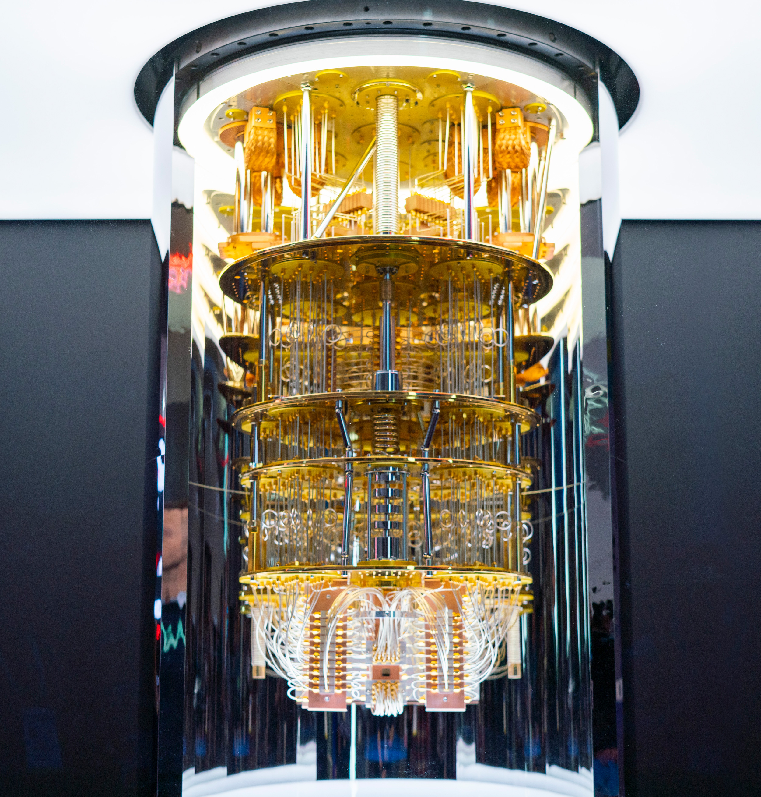
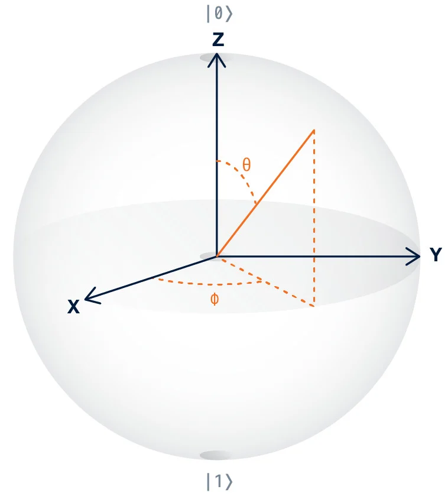
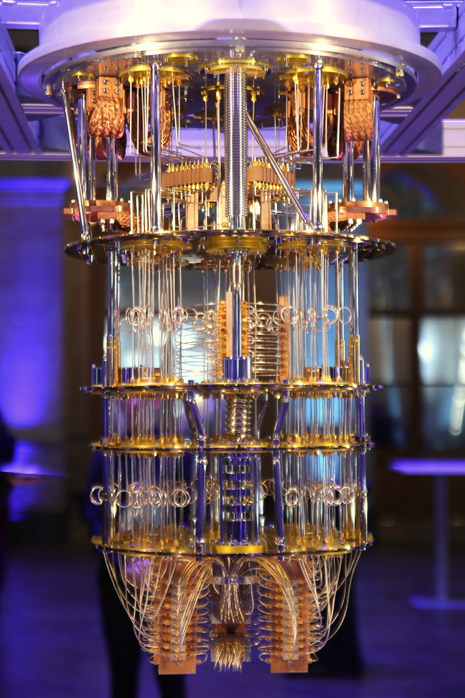

Overview
What are Quantum Computers?
When most people hear the word quantum, they either immediately think of subatomic physics, numbers, or Ant-man. However, if you thought the first option, you might think that quantum physics (or quantum mechanics), is only applicable to subatomic particles, or things that are smaller than atoms. What most people do not realize is that almost any macroscopic system can be quantum- under the right conditions. This idea is applied to create quantum computers, which utilizes quantum mechanics to create a computer that solves problems in a foundationally innovative way. For specific applications, these quantum computers are able to solve complex problems that would take classical supercomputers hundreds of years to solve in minutes or hours! But first, to understand how this works, you need to understand the principles of quantum mechanics that allow quantum computers to behave so specially.

Source: IBM
Principles of Quantum Mechanics Used in Quantum Computing
There are four main principles of quantum mechanics that are necessary to understand how quantum computers work.
- Superposition allows qubits (quantum bits) to exist in a state that is a combination of all of the possible states. So instead of just being either 0 or 1, superposition allows qubits to have a superposition of both states. This ability is what truly allows quantum computers to solve some problems faster than classical computers, for they are able to take many probabilities at the same time and collapse them into the best answer. Once these qubits are measured, they collapse into either 0 or 1 based on the previous probabilities.

A way to understand and model the complex theory of superposition is to use Bloch spheres (above). A Bloch sphere is a 3D sphere with the top representing the superposition of 0, the bottom representing the superposition of 1, and the vectors in between representing a complex combination of the two.
Source: IBM Research
- Entanglement is the trait where quantum particles (or qubits) in the same system are linked so that their state will depend on each other and correlate. As a result, measuring one entangled particle will give information about another entangled particle, which can be very useful in quantum computers. However, these particles will still be linked even if separated over a long distance, which may sound straight out of a sci-fi movie. But don't worry, even Einstein called this “spooky action at a distance”.

Source: Waterloo University
- Interference is what truly allows scientists to control the qubits and make them carry out a function. In a quantum system, each quantum particle is structured as a wave, with the amplitudes representing the probabilities. As the different waves interact, multiple peaks or multiple troughs amplify each other, and a combination of a peak and trough cancels each other out. This process is essentially how the qubits carry out their functions, with the resulting amplitudes being a compilation of the initial numerous possibilities.
- Decoherence is the process when a quantum system collapses into a binary system, which can be caused by measurement or external factors. One of the main goals inside a quantum computer is to minimize decoherence so that it occurs at the right moment. If decoherence occurs too early, the “quantum” part of the system will be lost, and will not be able to continue.
By working together, all of these principles are able to power a quantum calculation. When the input is given to the processor, it uses interference and entanglement to manipulate the qubits in order to create the right probabilities and solutions.
What is the Significance of Quantum Computing?
The unique method of quantum computing allows quantum computers to solve incredibly complex problems significantly faster than the best supercomputer. However, it is important to remember that quantum computers are not always better than classical computers, and for many everyday calculations, it is actually less efficient. Here are some of the situations where quantum computers would be very useful and efficient:
- The simulation or modeling of atomic behavior is incredibly hard for classical computers to model because of the complex electron interactions. Using quantum computers, scientists would be able to actually model the behavior, which could be really important for both chemistry and physics.
- Today, most systems of cybersecurity rely on integer factorization of very large numbers, which is very difficult for classical supercomputers to solve. However, quantum computers' use of superposition allows them to solve these problems much faster, which would give various insights towards how to benefit cybersecurity.
- Quantum computers would also be able to efficiently model molecular interactions of diseases, which would allow scientists to develop drugs and treatment much more efficiently than supercomputers.
- Quantum computing would also be able to complement machine learning by helping solve specific problems or roadblocks in the future of AI.
Types of Qubits
There are many different hardware approaches to quantum computing that create qubits in different ways. In this website, we will be focusing on quantum computers that utilize superconducting qubits, which are the most commonly used.
- Superconducting qubits are made from superconducting materials, which have no electrical resistance from their low temperatures, allowing them to have the speed, ability, and control needed to complete fine-tuned tasks.
- Trapped Ion qubits have a long lifespan and are very consistent, but they are much slower than superconducting qubits.
- Quantum Dot qubits are made of small semiconductors that use one electron as a qubit, which give it the potential to combine with other semiconductor technology.
- Photon-based qubits can send information across optical fiber cables, and are currently used in quantum communication and quantum cryptography.
General Hardware Components of a Quantum Computer
Each quantum computer is contained inside a dilution refrigerator, which is the different layers and “shell” of the computer. Inside and outside the dilution refrigerator, there are different hardware components that work together to create a working quantum computer.
- The Quantum Processor Unit (QPU) is the actual brain of the quantum computer and the part that completes the calculations. It consists of the chip with the qubits in it, and specific hardware that controls the input and output.
- Many of the wires that carry signals are made of superconductors, which if you recall, are materials so cold that they allow electrons to travel through them without any resistance. This lack of resistance allows electrons to pair into Cooper pairs, which help create the quantum environment needed for quantum computers.
- There are also control elements in the quantum computer that allow the user to interact with the computer. By firing microwave photons at the qubits, scientists are able to control the qubits so they can carry out calculations.
- However, the user is not dealing with the actual microwave technology- they are using a software program that converts their input into microwave signals.

Source: Pierre Metivier
Classical vs. Quantum
As a refresher of what we have learned so far, the following will include a condensed version of the differences between classical and quantum computers.
- Uses classical physics and computer science
- Completes calulations sequentially
- Bits represent 0 or 1
- Used in common devices and supercomputers
- Deterministic
- Uses quantum mechanics
- Completes calculations using superposition and interference
- Qubits represent a superposition of 0 or 1, or a combination of the two
- Used for specific high-tech modeling applications
- Probabilistic